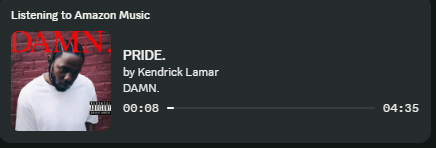
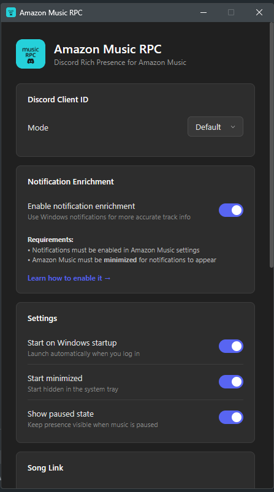

Show your Amazon Music songs on Discord
A lightweight Windows app that gives Amazon Music the Spotify-style Discord status it never had.
See what shows up on Discord
Amazon Music RPC updates your Discord profile with the track, artist, album artwork, and playback timing from the Amazon Music desktop app.


Built for daily use
Run it in the tray, let it update Discord automatically, and tune privacy or scrobbling from Settings when needed.
Amazon Music does not get Spotify-style Discord status by itself
This fills that gap for Windows users. It reads what the Amazon Music desktop app is playing and sends a polished Rich Presence payload to Discord.
Everything people expect from a music presence
Now playing
Show the current title, artist, album, album art, and progress timer on your Discord profile.
Pause state
Keep your presence visible while paused with a frozen progress bar and clear paused state.
Amazon links
Add a listen button that points to Amazon Music by default, with Deezer available as an option.
Scrobbling
Connect Last.fm or ListenBrainz to scrobble tracks while Amazon Music plays.
Privacy controls
Use private session or keyword filters to hide tracks you do not want to share.
Diagnostics
Check RPC, Discord, metadata, logs, and self-tests from a dedicated diagnostics window.
Local metadata first, Windows fallback when needed
Enhanced metadata reads the local Amazon Music desktop app for richer title, artist, album, artwork, playback state, and timing data. If enhanced metadata is unavailable, the app falls back to Windows media metadata and optional Amazon Music notification enrichment.
The privacy-sensitive parts are visible and optional
Enhanced metadata is optional
New installs ask before enabling enhanced Amazon Music metadata. Fallback-only mode is available in Settings.
Local-first design
Amazon Music metadata and notification fallback are read locally. Discord only receives the Rich Presence data needed to show your status.
Token handling
Last.fm and ListenBrainz tokens stay local, diagnostics redact known token values, and Settings includes a clear-token action.
Release verification
Release notes include SHA256 hashes, and the updater verifies installers when a hash is present.
If Discord does not update, start here
Check the basics
Make sure Discord desktop, Amazon Music, and Amazon Music RPC are running. Open Diagnostics from the tray for live status.
Metadata fallback
If enhanced metadata is off or unavailable, Windows media metadata still works. Notification fallback can improve the fallback path.
Notification setup
Amazon Music notifications must be enabled, and Amazon Music usually needs to be minimized for notification fallback to help.
Scrobbling
Reconnect Last.fm or validate a fresh ListenBrainz token if scrobbling stops. Private session can pause scrobbling.
Give Amazon Music a proper Discord status
Open source, Windows installer, privacy controls, scrobbling, and the metadata people expect from a music presence.